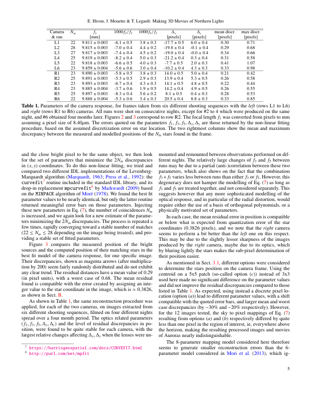

image #0

text #1E. Hivon, J. Mouette & T. Legault: Making 3D Movies of Northern Lights
text #2[table p0005 g0002]
text #3Table 1. Parameters of the camera response, for frames taken from six different shooting sequences with the left (rows L1 to L6)
text #4and right (rows R1 to R6) cameras. All runs were shot on consecutive nights, except for #2 to 4 which were produced on the same
text #5night, and #6 obtained four months later. Figures 2 and 3 correspond to row R2. The focal length f1 was converted from pixels to mm
text #6assuming a pixel size of 8.40µm. The errors quoted on the parameters f1, f3 , f5, ∆x , ∆y are those returned by the non-linear fitting
text #7procedure, based on the assumed discretization error on star location. The two rightmost columns show the mean and maximum
text #8discrepancy between the measured and modelled positions of the Nm stars found in the frame.
text #9and the close bright pixel to be the same object, we then look
text #44mounted and remounted between observations performed on dif-
text #10for the set of parameters that minimize the 2Nm discrepancies
text #45ferent nights. The relatively large changes of f3 and f5 between
text #11in ( x, y) coordinates. To do this non-linear fitting, we tried and
text #46runs may be due to a partial (anti-)correlation between these two
text #12compared two different IDL implementations of the Levenberg-
text #47parameters, which also shows on the fact that the combination
text #48f3 + f5 varies less between runs than either f3 or f5 . However, this
text #13Marquardt algorithm (Marquardt, 1963; Press et al., 1992): the
text #14curvefit7 routine included in the standard IDL library, and its
text #49degeneracy does not hamper the modelling of Eq. (7) as long as
text #15drop-in replacement mpcurvefit8 by Markwardt (2009) based
text #50f3 and f5 are treated together, and not considered separately. This
text #16on the MINPACK algorithm of Moré (1978). We found the best fit
text #51suggests however that any more sophisticated modelling of the
text #17parameter values to be nearly identical, but only the latter routine
text #52optical response, and in particular of the radial distortion, would
text #18returned meaningful error bars on those parameters. Injecting
text #53require either the use of a basis of orthogonal polynomials, or a
text #19these new parameters in Eq. (7), the number of coincidences Nm
text #54physically motivated set of parameters.
text #20is increased, and we again look for a new estimate of the parame-
text #55In each case, the mean residual error in position is compatible
text #21ters minimizing the 2Nm discrepancies. The process is repeated a
text #56or below what is expected from quantization error of the star
text #22few times, rapidly converging toward a stable number of matches
text #57coordinates (0.3826 pixels), and we note that the right camera
text #23(22 ≤ Nm ≤ 28 depending on the image being treated), and pro-
text #58seems to perform a bit better than the left one on this respect.
text #24viding a stable set of fitted parameters.
text #59This may be due to the slightly lesser sharpness of the images
text #25Figure 3 compares the measured position of the bright
text #60produced by the right camera, maybe due to its optics, which
text #26sources and the computed position of their matching stars in the
text #61by bluring lightly the stars makes the sub-pixel determination of
text #27best fit model of the camera response, for one specific image.
text #62their position easier.
text #28Their discrepancies, shown as magenta arrows (after multiplica-
text #63As mentioned in Sect. 3.1, different options were considered
text #29tion by 200) seem fairly randomly distributed and do not exhibit
text #64to determine the stars position on the camera frame. Using the
text #30any clear trend. The residual distances have a mean value of 0.29
text #65centroid on a 5x5 patch (so-called option (c)) instead of 3x3
text #31(in pixel units), with a worst case of 0.68. The mean residual
text #66used here made no significant difference on the parameter values
text #32found is compatible with the error created by assigning an inte-
text #67and did not improve the residual discrepancies compared to those
text #33ger value to the star coordinate in the image, which is ≃ 0.3826,
text #68listed in Table 1. As expected, using instead a discrete pixel lo-
text #34as shown in Sect. 2.
text #69cation (option (a)) lead to different parameter values, with a shift
text #35As shown in Table 1, the same reconstruction procedure was
text #70compatible with the quoted error bars, and larger mean and worst
text #36applied, for each of the two cameras, on images extracted from
text #71case discrepancies (by ∼30% and ∼20% respectively). However,
text #37six different shooting sequences, filmed on four different nights
text #72for the 12 images tested, the sky to pixel mappings of Eq. (7)
text #38spread over a four month period. The optics related parameters
text #73resulting from options (a) and (b) respectively differed by quite
text #39( f1, f3 , f5 , ∆x , ∆y ) and the level of residual discrepancies in po-
text #74less than one pixel in the region of interest, ie, everywhere above
text #40sition, were found to be quite stable for each camera, with the
text #75the horizon, making the resulting processed images and movies
text #41largest relative changes affecting ∆x , ∆y when the lenses were un-
text #76of Auroras nearly indistinguishable.
text #77The 8-parameter mapping model considered here therefore
text #427 https://harrisgeospatial.com/docs/CURVEFIT.html
text #78seems to generate smaller reconstruction errors than the 6-
text #438 http://purl.com/net/mpfit
text #79parameter model considered in Mori et al. (2013), which ig-
text #805